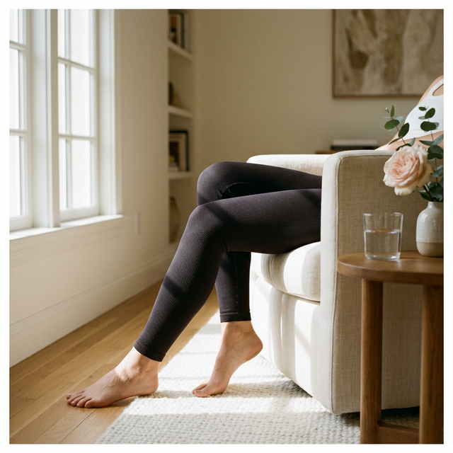

Post-surgical puffiness is your body working overtime. MicroPerle® technology supports that process passively — designed to help you feel like yourself again, sooner.
What recovery actually feels like
"I'm swollen everywhere and nothing fits."
Post-surgical puffiness isn't just uncomfortable — it can slow your progress. Your body needs support to clear excess fluid from the surgical area. When it gets overwhelmed, discomfort lingers.
"My surgeon gave me compression. It's awful to wear."
Standard post-op compression garments do one thing: squeeze. They look clinical, feel restrictive, and most patients stop wearing them before the recommended window ends — which delays recovery.
"I want to feel human again — not like a patient."
Recovery is hard enough without wearing something that signals "medical procedure" to the world. You deserve garments that support your body and your confidence at the same time.
Verified reviews from post-surgical patients, plastic surgeons, and med spa professionals.
"I recommend Elastique to my BBL and liposuction patients as a step-down garment. The MicroPerle® technology provides gentle micro-massage support — patients who use it consistently report feeling more comfortable through their recovery."
"Two weeks post-lipo and I was shocked by how much faster I was moving around normally. My surgeon noticed too — she actually asked what I was wearing. These have become my protocol garment now."
"We started offering Elastique in our med spa and the response is extraordinary. Patients actually wear the compression. Compliance is the biggest challenge in post-surgical care — and these solve it."
"I had a tummy tuck and was dreading weeks of looking 'medical.' These looked like high-end activewear from day one. I wore them to lunch at week three. Nobody knew I was in recovery."
After surgery, your body works to clear excess fluid and restore comfort. Standard compression squeezes. MicroPerle® technology provides a gentle micro-massage sensation — the difference between passive pressure and active comfort support.
Standard Post-Op Compression
Elastique MicroPerle®
Hundreds of MicroPerle® micro-massage beads are engineered into the fabric in strategic positions. With every micro-movement — walking to the kitchen, adjusting your position — the beads gently provide a comforting micro-massage sensation to support your body as it does its natural work.
Clinically effective. Socially wearable. Nothing looks like a medical garment.
$235 · HSA/FSA eligible
$275 · HSA/FSA eligible
$150 · HSA/FSA eligible
Most plastic surgeons recommend 6–12 MLD sessions post-surgery. That adds up fast — and you still have to show up to every appointment.
HSA & FSA eligible. 92% of customers report noticeable comfort improvement. 30-day guarantee — if you don't notice a difference, you don't pay.
12,400+ patients chose to recover with technology that works for them. Start with a 30-day guarantee — if you don't feel a noticeable difference in comfort, you pay nothing.
Shop Recovery Collection →